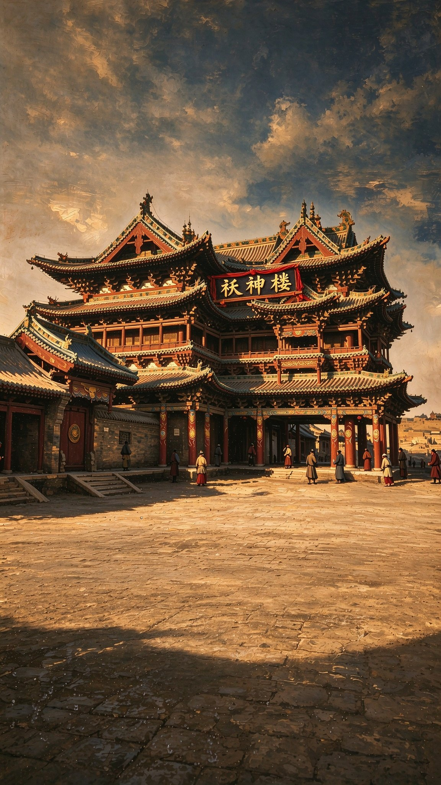

امروز
۱۲٬۸۴۷
نفر آب پاشیدند
Tirgan Splash · Rast Film
Join on Patreon ↗
تیرگان مبارک
Happy Tirgan Festival
هرچند پارس کهن است، سرنوشت او نو میشود
Though Persia be old, its mandate is ever new
EN
فارسی
Tap a doll: it bends, scoops & splashes on the spot
— 3-min water battle
آبپاشی
تیرگان مبارک
Tirgan Water Festival
Tap to begin · 3-MIN WATER BATTLE
3:00
TIME
0
SCORE
TIRGAN BATTLE
0
—
Take a breath. Splash again.
PLAY AGAIN
BACKSTAGE · RAST FILM ↗